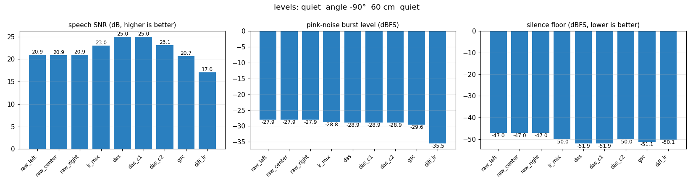
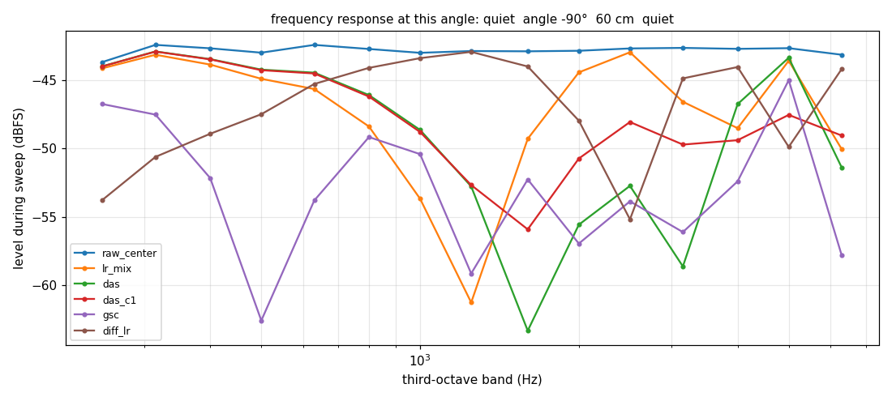
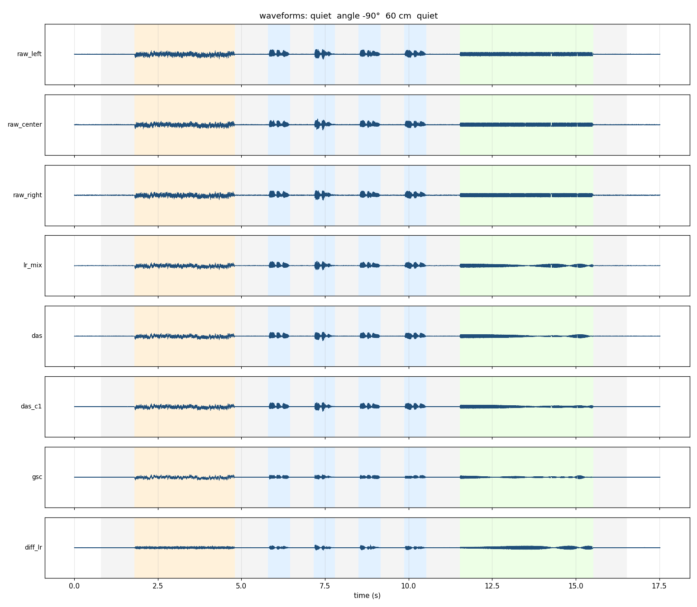
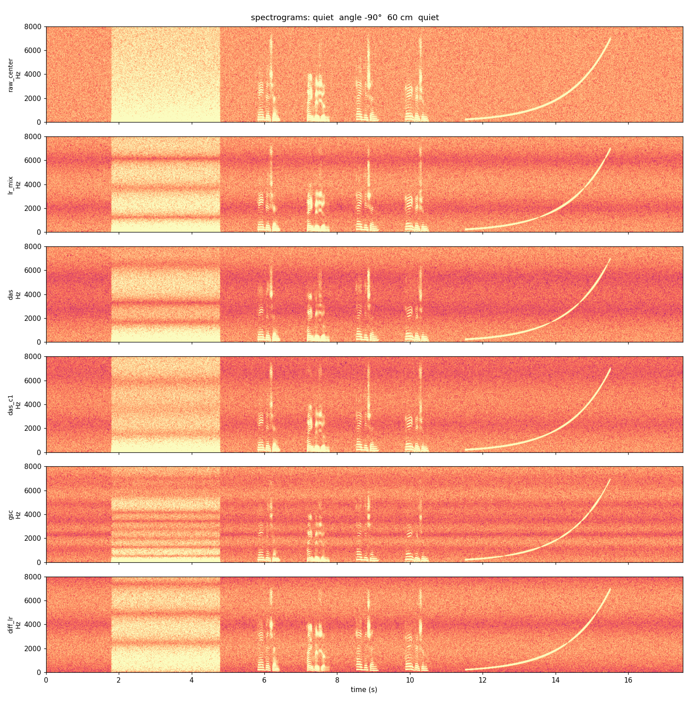

angle -90°, 60 cm, quiet, 17.53 s. Clip offset 0.8 s (confidence 0.945).
Microphones hear the source at -84° (L-R delay -6.5 samples, peak 11.5).
| path | rms_dbfs | speech_snr_db | noise_level_dbfs | silence_floor_dbfs | peak | clips |
|---|---|---|---|---|---|---|
| raw_left | -30.47 | 20.91 | -27.92 | -47.02 | 6569 | 0 |
| raw_center | -30.47 | 20.9 | -27.91 | -47.03 | 6377 | 0 |
| raw_right | -30.47 | 20.92 | -27.91 | -47.03 | 6222 | 0 |
| lr_mix | -32.09 | 22.98 | -28.76 | -50.03 | 5512 | 0 |
| das | -32.31 | 24.96 | -28.93 | -51.85 | 5165 | 0 |
| das_c1 | -32.32 | 25.0 | -28.89 | -51.88 | 5394 | 0 |
| das_c2 | -32.19 | 23.14 | -28.88 | -50.01 | 5388 | 0 |
| diff_lr | -35.54 | 17.03 | -35.47 | -50.08 | 3550 | 0 |
| gsc | -34.56 | 20.7 | -29.59 | -51.14 | 4100 | 0 |



